# 基础
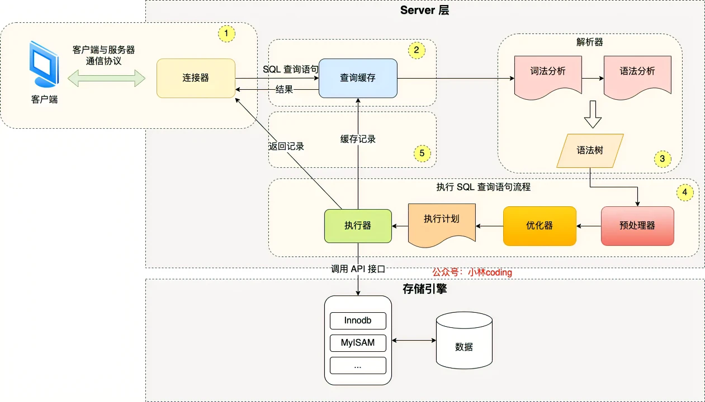
# Buffer Pool
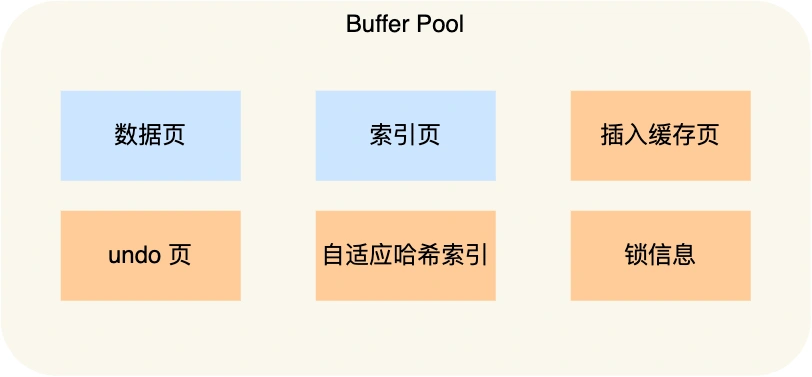
# 索引
# 分类
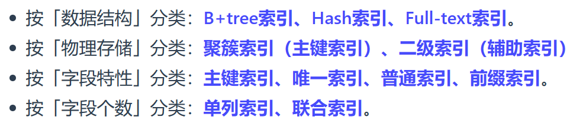
联合索引的最左匹配原则，在遇到范围查询（如 >、<）的时候，就会停止匹配，也就是范围查询的字段可以用到联合索引，但是在范围查询字段的后面的字段无法用到联合索引
注意，对于 >=、<=、BETWEEN、like 前缀匹配的范围查询，并不会停止匹配
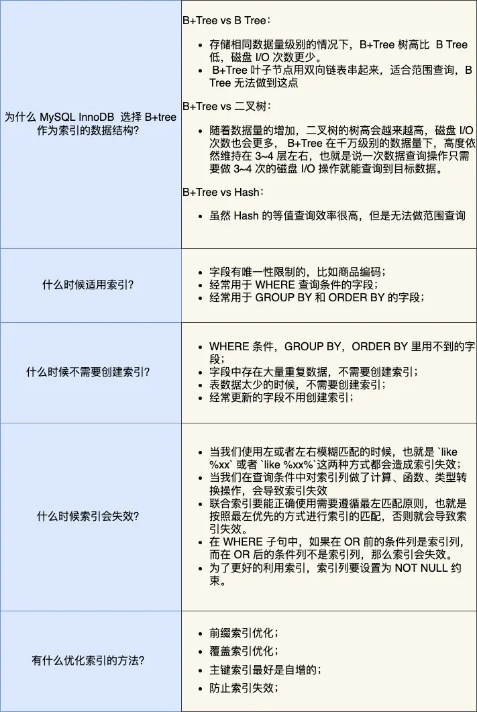
# 事务
# 特性
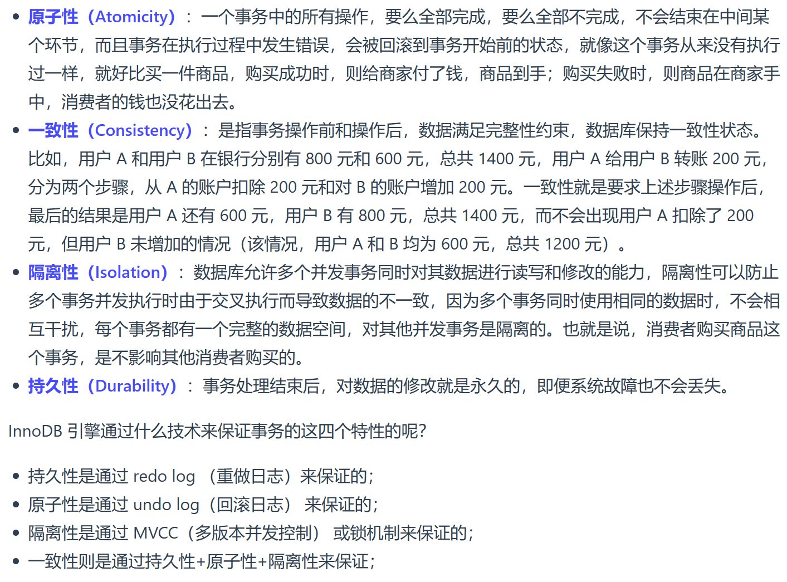
脏读：读到其他事务未提交的数据
不可重复读：前后读取的数据不一致
幻读：前后读取的记录数量不一致
# 隔离级别
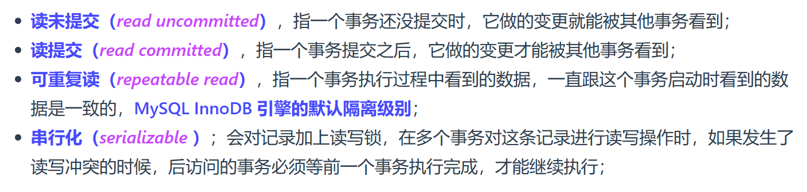
「读提交」和「可重复读」隔离级别的事务通过 Read View 实现
「读提交」隔离级别是在「每个语句执行前」都会重新生成一个 Read View
「可重复读」隔离级别是「启动事务时」生成 Read View，整个事务期间都用该 Read View
# Read View
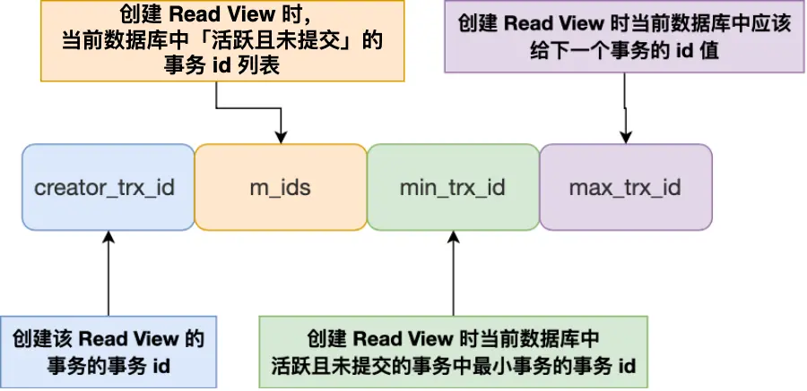
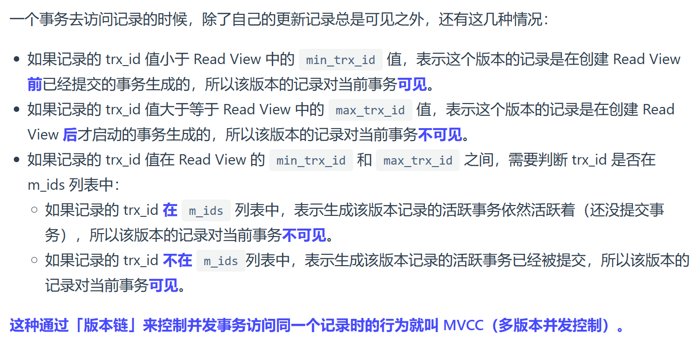
# 锁
# 种类
# 全局锁
执行后，数据库处于只读状态，用于做全库逻辑备份
# 表级锁
- 表锁
对整张表加读锁或写锁
- 元数据锁 MDL
对表进行 CRUD 时，加 MDL 读锁
对表进行结构变更时，加 MDL 写锁
- 意向锁
意向共享锁和意向独占锁是表级锁，不会和行级的共享锁和独占锁发生冲突，而且意向锁之间不会发生冲突，只和表锁发生冲突。
意向锁的目的是为了快速判断表里是否有记录被加锁
- AUTO-INC 锁
用于给设置为自增的主键赋值，阻塞其他事务对该表的插入操作
# 行级锁
- Record Lock
记录锁，也就是仅仅把一条记录锁上
- Gap Lock
间隙锁，锁定一个范围，但是不包含记录本身
- Next-Key Lock
锁定一个范围，并且锁定记录本身
# 插入意向锁
表明有事务想在某个区间插入新记录，但是该区间被加了间隙锁，现在处于等待状态
# 加锁
# 唯一索引等值查询
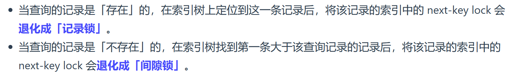
# 唯一索引范围查询
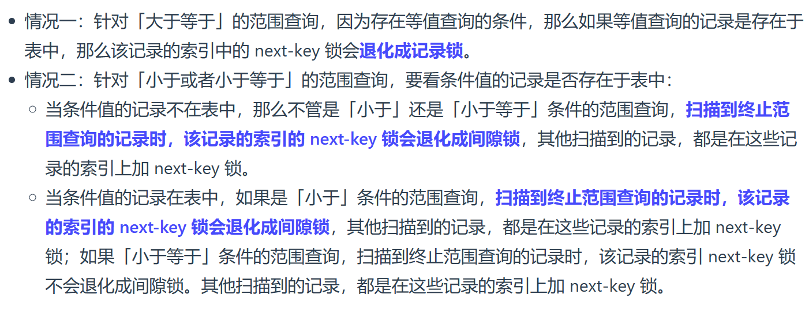
# 非唯一索引等值查询
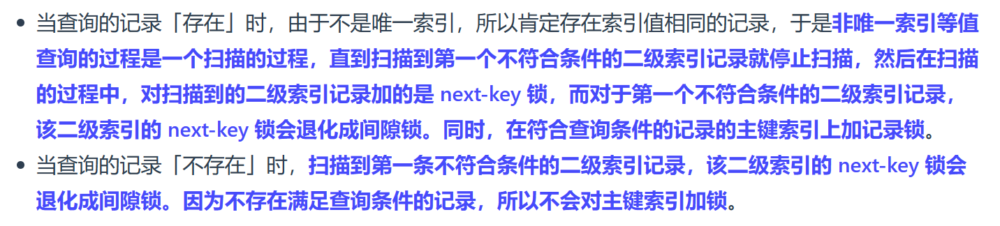
# 非唯一索引范围查询
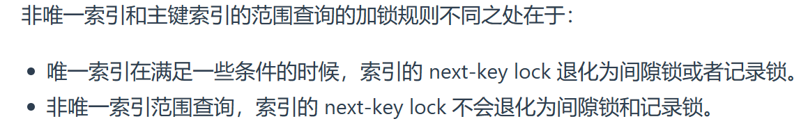
# 日志
# undo log
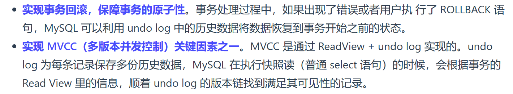
# redo log
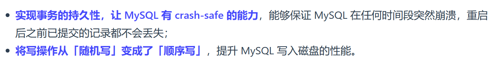
# 主从复制
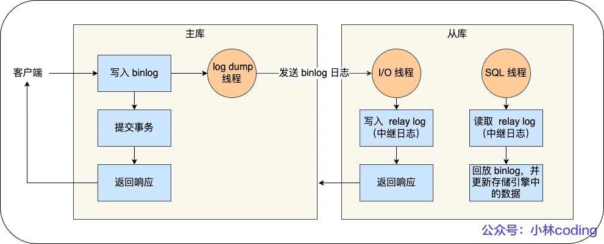
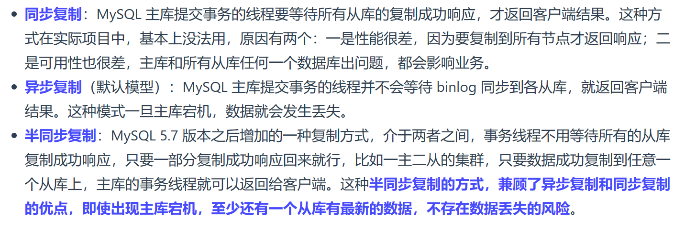
# 两阶段提交
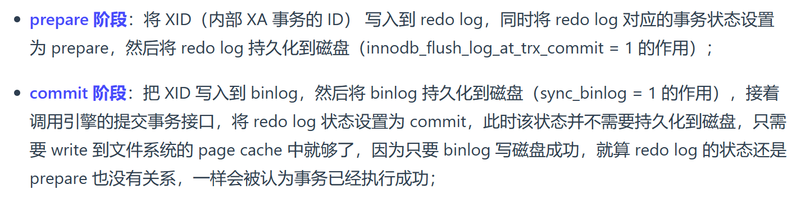
# 更新记录流程
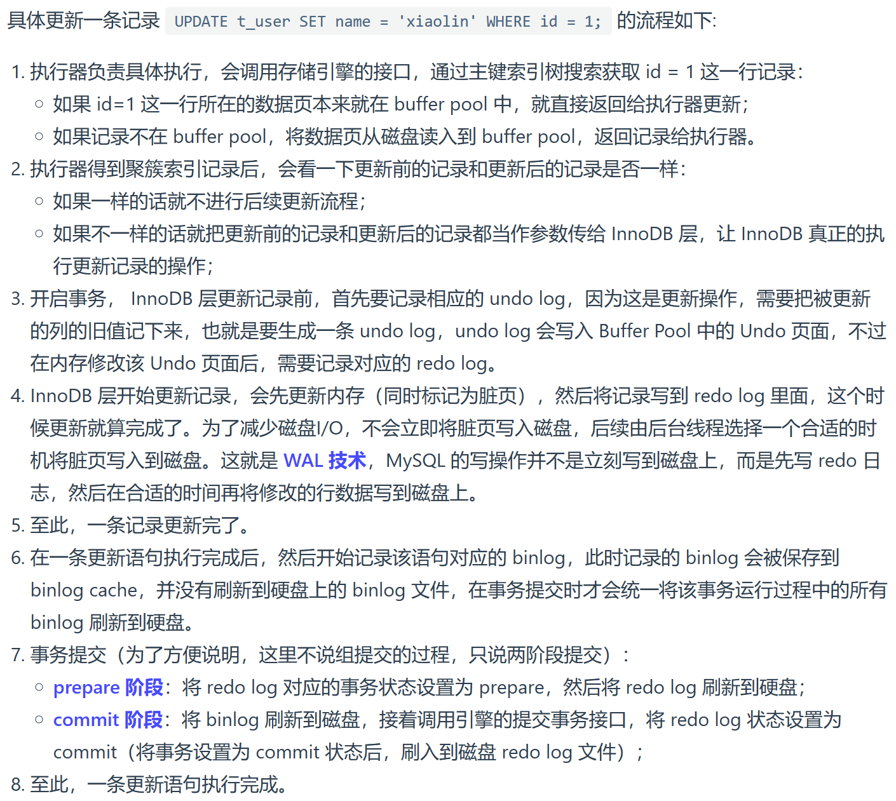